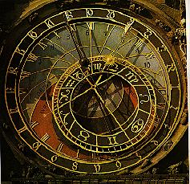

The 30th Annual ACM International Collegiate Programming Contest World Finals · Problem F
In Old Town Square in the city of Prague, there is a beautiful Astronomical Clock, constructed in the year 1410. For centuries, the clockmaker’s art consisted of using gears to connect a shaft, turning at a known rate, to other shafts until, by the proper combination of gears, two shafts could be made to turn at the correct rates to represent minutes and hours.

You must write a program that, given an input shaft speed and a collection of gears, computes how the gears can be connected to create a clock with an hour hand and a minute hand. You may use as many shafts as you like, but each shaft may have a maximum of three gears. All the gears on a shaft turn at the same rate. If a gear having T₁ teeth turning at a rate R₁ is engaged with another gear having T₂ teeth, the turning rate of the second gear is –R₁(T₁/T₂). Your solution must include two shafts, a minute shaft that turns clockwise at the rate of one revolution per hour, and an hour shaft that turns clockwise at the rate of one revolution per twelve hours. Your solution is not required to use all the available gears.
The input consists of several trials, each described by one line of input. Each input line begins with an integer N (3 ≤ N ≤ 6), the number of gears available for building a clock. N is followed by another integer R (-3600 ≤ R ≤ 3600, R ≠ 0), the turning rate of the input shaft, which is the number of revolutions made by the shaft in 24 hours. (A positive number represents clockwise rotation, and a negative number represents counter-clockwise rotation.) R is followed by N gear descriptions. Each gear description is a pair: a one-character name that identifies the gear, followed by an integer T (6 ≤ T ≤ 120), that is the number of teeth on the gear. The names and numbers on each input line are separated by spaces, as shown in the sample input.
The last trial is followed by a line containing a single zero.
For each trial, print a line containing the trial number, as shown in the sample output. If it is possible to construct a clock using the given set of gears, the line containing the trial number must be followed by two more output lines, one for the minute hand and one for the hour hand. Otherwise, the line containing the trial number must end with the words IS IMPOSSIBLE as shown in the sample output.
The line for the minute hand starts with Minutes: followed by a plan that shows how the input shaft is connected by a sequence of gears to the minute shaft. The plan consists of a sequence of shafts, separated by hyphens. Each shaft is represented by one or two characters. The first character is the name of the driven gear—the gear on the shaft that is engaged with a gear on the previous shaft. For the input shaft, use an asterisk (*) to represent the absence of a driven gear. The second character describing a shaft is the name of the driving gear—the gear on the shaft that is engaged with a gear on the next shaft. The driven gear and the driving gear can be the same gear, in which case the shaft is described by a single character which is the name of this gear. The last shaft in the plan is the minute shaft, described by a single letter which is the name of its driven gear.
The line for the hour hand starts with Hours: followed by a plan for connecting the input shaft to the hour shaft. Use the same format as the minute plan.
Each gear may occur only once in the clock. The minute plan and the hour plan may have an initial part in common, however. A gear in a common initial part will occur both in the minute plan and the hour plan. For the same reason, a given shaft can be used in both the hour plan and the minute plan. If a shaft is used in both plans, it may or may not have the same description in both plans. For example, a shaft containing a single gear named A will be represented as A in both plans. On the other hand, a shaft containing three gears named A, B, and C might be represented as AB in the minute plan (if B is the driving gear in that plan) and as AC in the hour plan (if C is the driving gear in that plan).
The following lines represent valid output lines:
Hours: *A-BC-D
An input shaft having one gear, engaged with an intermediate shaft having two gears, engaged with an hour shaft having one gear.
Minutes: *A-B-C
An input shaft having one gear, engaged with an intermediate shaft having one gear, engaged with a minute shaft having one gear.
Minutes: *
A plan in which no gears are needed because the input shaft is turning at the correct rate for the minute shaft.
If there are multiple ways to build a clock using the given gears, print the solution that uses the minimum number of shafts. In case of a tie for the minimum number of shafts, print the solution that uses the minimum number of gears. In case of a tie for both the minimum numbers of shafts and gears, print the solution whose string description is alphabetically first. The string description of a solution is its minute plan, followed by its hour plan, concatenated together with asterisks and hyphens removed. For example, a solution in which the minute plan is *A-B and the hour plan is *A-BC-D-E has the string description ABABCDE.
Print one blank line between trials.
6 40 P 7 Q 84 R 50 A 40 B 30 C 14 6 40 P 7 Q 84 R 45 A 40 B 30 C 14 0
Trial 1 Minutes: *B-A-R Hours: *B-A-RP-C-Q Trial 2 IS IMPOSSIBLE